AllinOneDesign 사용 설명서
요구사항에서 시스템 다이어그램 → 회로 → PCB → 기구까지, 브라우저 하나에서 AI와 함께 설계하는 도구입니다. 이 설명서는 화면 순서대로 따라가며 읽도록 썼습니다.
소개
AllinOneDesign은 단일 HTML 파일로 동작하는 하드웨어 설계 작업 공간입니다. 한 프로젝트의 산출물(HW 블록 다이어그램, 회로도·넷리스트·BOM, 배치·배선된 PCB, 보호 하우징 도면·BOM, HSIS, 시뮬레이션, 리비전 이력)이 한 곳에 있고, 어느 단계에서든 설계 도우미(AI)에게 말이나 명령으로 지시할 수 있습니다.
시작하기
dist/index.html을 브라우저(Chrome·Edge 권장)로 엽니다. 3D·zip·엑셀 라이브러리만 CDN에서 불러오므로 인터넷이 필요합니다. 설계 파일은 브라우저 안에서만 처리됩니다.- 첫 화면에서 신규 설계 또는 기존 프로젝트를 고릅니다. 아래의 예제 칩(SENSE-32, MCU DC 모터, MCU BLDC 3상, AURIX TC364)을 누르면 바로 둘러볼 수 있습니다.
- 머리의 로고 아이콘을 누르면 언제든 첫 화면으로 돌아옵니다.
화면 구성
| 영역 | 내용 |
|---|---|
| 머리 | 프로젝트 이름·리비전, 전체(전체 보기), 단계 표시줄(1 시스템 · 2 회로 · 3 PCB · 4 기구 CAD), HSIS, 파일 불러오기, 내보내기, 리비전, 보기 전환(3D · TOP · BOTTOM · 층 선택 · 회로도), 나란히, 새 창, 도우미 접기 |
| 지표 띠 | BOM 참고가 · 가이드라인 · DRC · HSIS · 최고 Tj · 하우징. 타일을 누르면 해당 화면으로 갑니다. |
| 작업 공간 | 단계에 따라 바뀝니다: 보드(레이어·보드 요약 + 3D/2D/회로도), 시스템 다이어그램, 기구 CAD, HSIS, 전체 보기. |
| 도킹 패널(오른쪽) | 설계 도우미 · 정보(선택·부품·넷·데이터) · 시뮬레이션 · 데이터시트. 각 탭의 ↗로 새 창에 띄울 수 있고(메인 창과 연동), 경계선을 끌어 너비를 바꿉니다. |
모든 버튼·탭에는 기능을 나타내는 아이콘이 붙어 있고, 지금 단계·선택된 탭은 강조색으로 표시됩니다.
신규 설계 4단계
첫 화면의 신규 설계를 누르면 빈 프로젝트가 열리고 1단계부터 시작합니다. 단계는 순서대로 열립니다(회로 없이는 3단계로 못 가고, PCB 배치 전에는 4단계가 잠깁니다).
1단계 · 시스템 다이어그램
- 왼쪽 패널에 프로젝트 이름과 요구사항(무엇을 만들지 · 입력 전원 · 통신 · 구동/센싱 · 안전 등급)을 적습니다. 예제 칩을 누르면 문장이 채워집니다.
- 블록 다이어그램 만들기를 누르거나, 오른쪽 도우미에 문장을 바로 보냅니다.
- 빠진 필수 정보가 있으면 도우미에 질문 카드가 뜹니다. 선택지를 누르거나 직접 적어 답하세요(건너뛰면 기본값). 답은 요구사항에
보강: …으로 합쳐집니다. - HW 블록 다이어그램이 그려집니다. 블록을 누르면 왼쪽 아래에서 기능·인터페이스·회로 구현을 고칠 수 있고, 명령(
block·link·feat·rename·del)으로도 편집합니다. - 다음: 회로 생성 →으로 2단계로 갑니다.
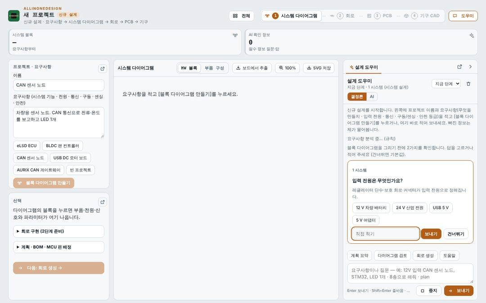
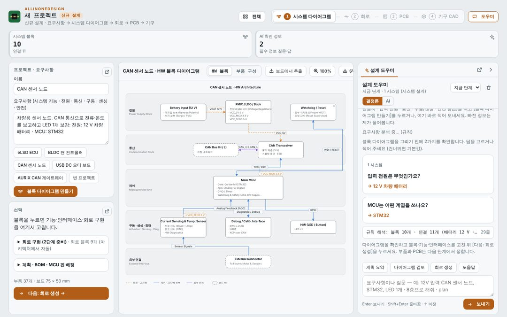
제품 프로필 — "EPS"라고만 써도 표준 구성부터
요구사항이 알려진 제품(EPS · BMS · BCM · 트랙션 인버터 등 차량용 ECU)이면 먼저 그 제품의 표준 구성(표준 요구사항 · 필요 HW 블록 전부 · 인터페이스)을 깔고, 그 다음 블록별로 갈리는 것만 묻습니다 — 예: EPS는 [3상 인버터] 타입·상전류, [토크 센서 IF] SENT/아날로그/PSI5, [각도 센서] MR/리졸버/홀, [MCU] 리던던시, [CAN] 추가 통신. 답은 바로 블록 기능·구현·복제(2채널)·안전 등급에 반영되고, 요구사항 칸에 "보강: 제품 … · 키워드"로 기록됩니다. 요구사항에 이미 적힌 항목(예: "랙 타입 120 A, SENT")은 묻지 않습니다.
- AI 모드: Claude가 어떤 제품이든(OBC, DC/DC, TCU, 에어백, 클러스터 …) 같은 형식의 프로필을 만들어 묻습니다. 제품으로 보지 않으면 일반 질문(전원·MCU·통신·기능·안전)으로 갑니다.
- 결정론 모드: 내장 템플릿(EPS · BMS · BCM · 인버터)만 인식합니다.
- 부품 후보: 블록마다 제조사가 다른 후보 3–5개(예: 게이트 드라이버 TLE9180 · L9908 · DRV8353 · GD3000 · A4919)를 보여주고
[블록] 부품을 고르세요로 묻습니다. 건너뛰면 1순위, "나머지 모두 1순위"로 한 번에. 고른 부품은 블록에 기록되고, CAN 트랜시버·게이트 드라이버·HSD·센서 앰프처럼 단일 IC 블록은 핀을 알면(라이브러리 또는 AI 모드의 Claude 추정) 회로 구현까지 그 부품으로 바뀝니다. 나중에 콘솔parts/parts <블록> <번호|MPN>으로 바꿀 수 있습니다. - 표준 구성을 쓰지 않으려면 요구사항에 "템플릿 없이" 또는 "직접 구성"을 적으세요.
2단계 · 회로
- 다이어그램이 저가형 · 표준 · 확장형 세 회로 안으로 풀립니다. 예상 단가(부품 참고가 + PCB 제작(층수×면적) + 조립(부품·패드 수) + 부품 등급 계수 — 500개 기준 추정; 카드 아래 줄에 내역), 부품 수, 여유 MCU 핀, 레귤레이터 손실, 가격·기능·확장성 점수와 기준 안과의 차이를 비교합니다. 위의 우선순위(가격 · 균형 · 기능 · 확장성)로 추천이 바뀝니다.
- 이 안으로 회로 생성을 누르면 실제 부품 선정 · 넷리스트 · MCU 핀 배정 · 회로도(여러 시트)가 만들어집니다. 이 단계에서는 회로도만 보이고 PCB 관련 화면은 숨겨집니다.
- 데이터시트 탭에서 회로 부품 목록(참고 단가 합)과 부품별 정리 페이지를 봅니다. 회로도는 회로 편집으로 직접 고치거나 회로도 CLI(
add·move·wire·erc)로 편집합니다.
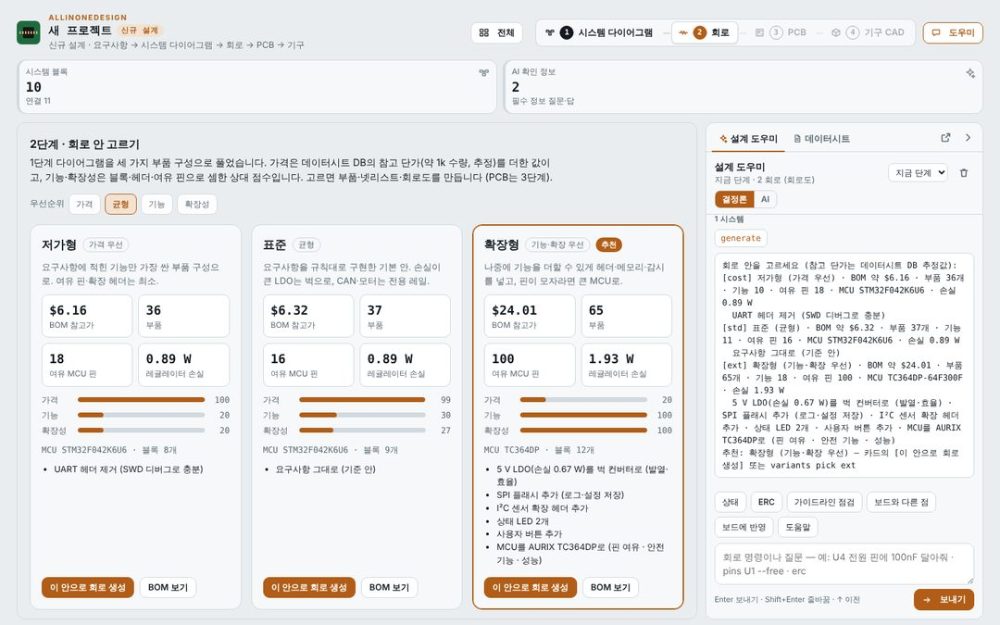
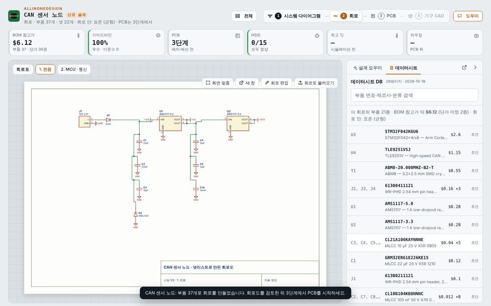
3단계 · PCB
- 처음 들어오면 PCB 설계 시작 카드가 열립니다. 동박 층(2/4/6/8/10), 보드 크기(최소화 · 자동 · 직접), 배치 전략(균형 · 열 분산 · 노이즈 최소화 …), 이어서 자동 배선을 고릅니다.
- ECU 라우팅 기준:
route는 ① 대전류 전원·구동 → ② 고속·클록·차동 → ③ 민감 아날로그 → ④ 일반 디지털 순서로 배선하고, 고속 넷은 보드 외곽 2 mm 띠를 피하며, 고속·아날로그 넷이 층을 바꾸는 비아 옆에 GND 리턴 비아를 자동으로 둡니다(--order length·--no-edge·--no-retvia로 끔). 디커플링 캡 최근접 배치는 배치 전략이, 노출 패드 써멀 비아는auto thermal/route --strategy thermal이 맡습니다.guide check --preset ecu로 우선순위·리턴 비아·외곽 금지·아날로그/스위칭 분리(Star GND)·써멀 비아 규칙을 점검합니다. - 배선 폭과 전류: 기본은 넷 이름으로 신호 0.2 / 전원 0.3 mm.
width를 치면 넷별 추정 전류(부품 소비·레귤레이터·모터 상전류)와 IPC-2221 권장 폭(1 oz, ΔT 10 °C) 표가 나오고,route --iw로 전원·모터 넷을 그 폭으로 배선합니다(상한 2 mm, 더 넓어야 하면 동박면 권장).width +12V 1.5(폭 지정),width PH_U --current 8(전류 지정),width --oz 2 --dt 20(동박 두께·허용 온도 상승).drc는 전류 대비 얇은 트랙을 온도 상승 추정과 함께 알려 줍니다. 문장으로는 "전류 기준으로 폭 맞춰 배선해줘", "+12V 전류 4A로 배선". - 단면 / 양면: 기본은 부품을 상단에만 놓습니다(단면 조립 = 리플로 1회로 가장 싸고, 커넥터·스루홀·전해 캡은 어차피 상단). 시작 카드의 양면 배치를 켜거나
reset --both/ "양면으로 다시 배치"라고 하면 수동소자와 소형 IC(SOT-23·SOIC-8급)를 하단에도 놓아 보드가 작아집니다. MCU·드라이버·레귤레이터·발열 부품은 상단에 남습니다. - 부품 옮기기·뒤집기:
move U3 30 20,rotate U3 90,flip U3(반대면) 또는 "U3를 하단으로 옮겨줘". 패드가 움직이면 그 부품 넷의 자동 배선을 지우고 바로 다시 배선합니다(--no-route면 래츠네스트만 남김). 마우스로 끌어 옮긴 경우는 래츠네스트로 끊긴 연결을 보여주며route로 다시 잇습니다. - 그림판처럼 그리기: PCB 편집 모드의 외곽 그리기 (O) 도구에서 모양을 고르고 보드 위에 끌면 그 자리에 외곽이 생깁니다 — 사각형·라운드(코너 R)·원·타원은 끌어서, 다각형은 꼭짓점을 차례로 클릭하고 첫 점을 다시 누르거나 더블클릭/Enter로 완성, 꼭짓점 모드로 점을 끌어 다듬기, 컷아웃 원/사각은 끌어서 구멍 추가, 컷아웃 지우기는 클릭. 부품은 새 외곽에 대해 제자리를 유지하고, 밖으로 나간 부품은 알려 주며 Ctrl+Z로 되돌립니다.
- 보드 모양도 고릅니다 — 사각형 · 라운드 사각형 · 원형 · 타원(스타디움) · L자 · T자 · 육각형 · 팔각형. "모양 값"에 코너 R, 원형 지름, L/T의 절개(기둥) 가로x세로와 모서리(tr·tl·br·bl), 육각/팔각 폭을 적습니다. 나중에 콘솔에서
board shape circle 60,board shape L 100 60 --cut 40x25 --at tr,board shape poly --pts "0,0 80,0 80,40 40,60 0,40"처럼 바꾸거나, 문장으로 "보드를 원형 60mm로", "육각형 보드 50mm"라고 해도 됩니다. 보드 안 구멍은board cutout circle 8 --at 20,20/board cutout rect 20x10 --at 50,30(board cutout clear로 삭제). 배치·배선은 외곽과 컷아웃을 피하고, 모양을 바꿔 밖으로 나간 부품은place/reset으로 다시 넣습니다. 3D·KiCad·보고서에도 모양이 반영되고, 4단계 하우징도 보드 외곽을 따라(원형·타원·L자 등) 벽·커버·나사 배치·도면·OpenSCAD가 만들어집니다. - 도우미가
board layers→board minimize/reset→route를 차례로 실행합니다. 결과는 변경 요청 카드로 남고, 되돌릴 수 있습니다. - PCB 편집(2D 보기 위)에서 부품을 끌어 옮기고(R 회전, F 뒤집기), 배선(X)·비아(V)를 그리며, 래츠네스트와 DRC 수를 확인합니다. 4층 이상이면 보기 탭 옆 층 선택(또는 [ ])으로 내층을 한 층씩 봅니다.
- 배선을 위해 회로를 함께 고칠 수 있습니다:
pinswap으로 MCU 핀 배정을 바꾸면 보드 넷·회로도·HSIS가 함께 바뀝니다.
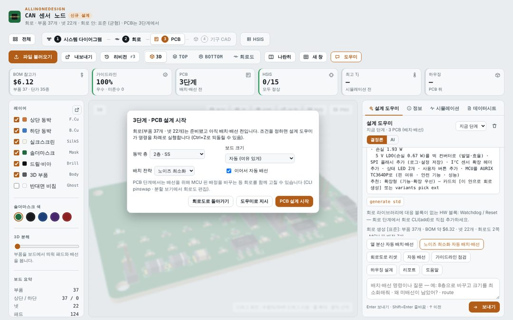
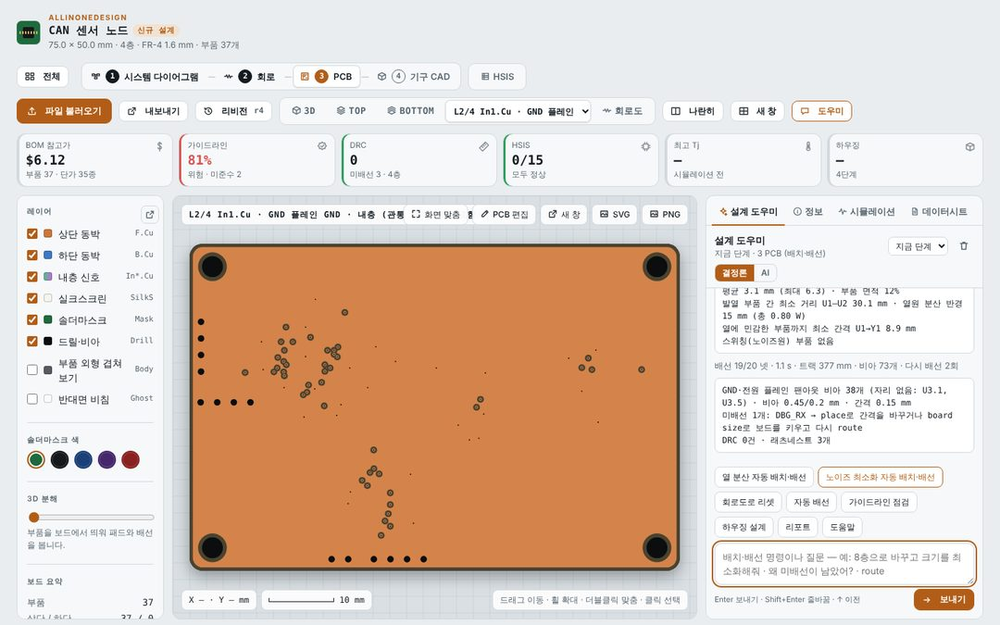
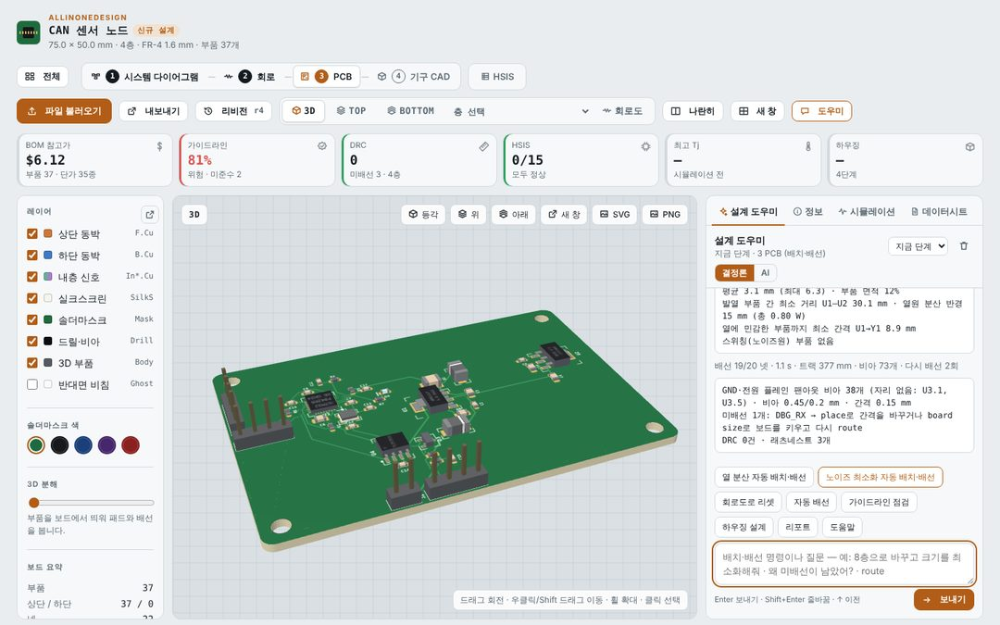
4단계 · 기구 CAD
- 왼쪽에서 설계 조건(발열 · IP 등급 · 진동 · 온도 · 재질 · 방열 패드)을 정합니다. 재질 6종(PC/ABS, PA66-GF, SPCC 판금, A6063 압출, ADC12·AZ91D 다이캐스팅)이 모두 계산되고 조건을 만족하는 최저 원가가 자동 선택됩니다. 하우징 시안 카드에서 구조를 고릅니다: A 다이캐스팅 알루미늄 ECU(커버 핀·장착 이어·플랜지), B PC/ABS 사출 스냅핏 박스(라이트 파이프·키홀), C 압출 프로파일+엔드 플레이트(DIN 클립), D 하이브리드(알루미늄 베이스 바닥 핀 + 플라스틱 커버에 커넥터 헤더 일체 성형). 시안이 베이스/커버 재질을 정하고 3D·도면·BOM·원가에 반영됩니다(콘솔
set concept D, "하이브리드로"). - 도우미에 문장으로 지시합니다: "오른쪽 벽에 M16 글랜드 2개, 장착 탭 4개 M5, 커버 윗면 R3 둥근모따기". 구멍·사각 구멍·글랜드·벤트·탭·보스·리브·방열 핀·각인, 벽 두께·모서리 R/C·스탠드오프 등을 명령(
hole·gland·tabs·fillet·edit…)으로도 넣습니다. - 3D에서 요소를 클릭 선택(Shift/Ctrl 다중)하거나 형상 트리·부품(BOM 순) 띠에서 고른 뒤 선택 막대에 "지름 12로", "위로 3 mm", "삭제"처럼 적으면 그 요소에만 적용됩니다. 분해 슬라이더로 커버를 들어 올립니다.
- 오른쪽 아래에서 CAD 내보내기(SCAD·STL·보고서 zip), 도면·BOM(조립도·부품도 SVG/PNG·기구 BOM·SCAD), BOM Excel.
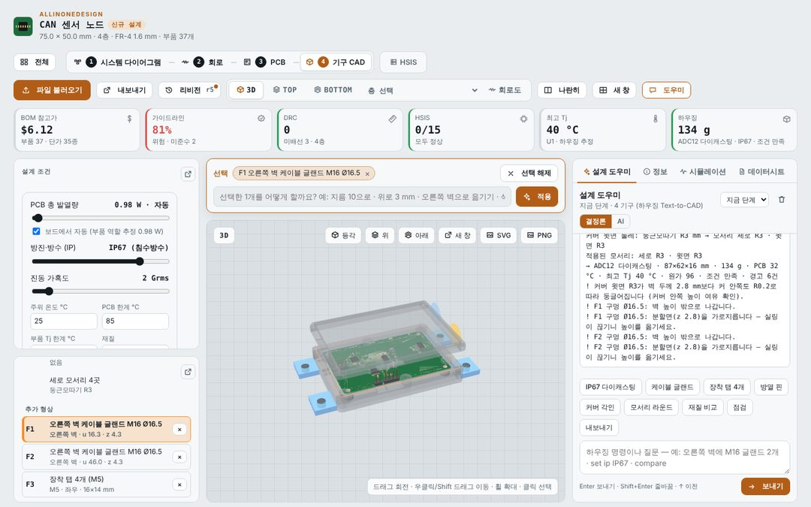
블록에 적힌 부품 번호가 부품 구성에 들어가게
HW 블록 다이어그램은 "기능 블록"이고, 부품 구성도·2단계 회로는 블록의 회로 구현(impl)에서 나옵니다. Claude가 블록 이름이나 기능 줄에 "CC2420"처럼 부품 번호만 적으면 그것은 글자일 뿐이라 부품 구성에 나타나지 않았습니다. 이제는 두 가지로 이어집니다.
impl rf part CC2420 [--pins SI=SPI_MOSI,CSn=RF_CS] [--vcc +3V3]— 부품 라이브러리(승인 목록 → 내장 → Claude 추정)의 핀 배열로 그 부품을 회로 구현으로 지정합니다. 전원/접지 핀은 레일에, SPI·I²C·UART·IRQ·RESET/EN 핀은 MCU 핀에 자동 배정되고 디커플링 100 nF가 붙습니다. 부품 구성도에 바로 보이고 2단계에서 실제 부품으로 생성됩니다.impl <ID> part <MPN>— 블록의 기존 부품(또는 bldc·can 같은 주 구현)을 그 부품으로 교체합니다(둘 다 두려면--add).remove <MPN>은 부품 번호로 빼고 HW 블록은 남깁니다.bind— 블록 이름·기능에 적힌 부품 번호를 찾아 자동으로impl … part로 연결합니다(AI 모드에서는 라이브러리에 없는 부품의 핀 배열을 Claude가 추정). AI 모드로 다이어그램을 만들면 끝에 자동으로 실행되고, Claude에게도 "부품을 고르면 impl part로 묶으라"고 안내합니다.
다이어그램 만든 뒤 부품 구성 바꾸기
1단계 콘솔에 "LDO를 벅으로 바꿔줘", "LED 3개로", "CAN 빼줘", "버튼 추가", "MCU를 TC364로 바꿔줘", "입력 전원 24V로"처럼 적으면(결정론·AI 모드 모두) 해당 HW 블록의 회로 구현(impl --swap)·파라미터·블록이 바뀌고 HW 블록 다이어그램과 부품 구성도가 함께 갱신됩니다. 명령으로는 impl reg buck --swap ldo, set led n 3, add button, remove can, mcu tc364. 변경 문장은 요구사항에 덧붙여 다시 분석하지 않으므로 손으로 고친 블록이 사라지지 않습니다.
기존 프로젝트 열기
첫 화면의 기존 프로젝트 또는 머리의 파일 불러오기에서 파일을 끌어다 놓습니다. 여러 파일(Gerber 세트 + 드릴 + Pick-and-Place + BOM)도 한 번에 넣을 수 있고, 파일 역할은 자동 판별되며 직접 바꿀 수 있습니다.
| 형식 | 내용 |
|---|---|
KiCad .kicad_pcb · .kicad_sch | 보드(내층 포함)·넷·부품·회로도. 저장도 KiCad 형식으로. |
| Gerber · Excellon · IPC-D-356 · Pick-and-Place · BOM(CSV/XLSX) | 동박(내층 In1_Cu, .G2 등 포함)·실크·외곽·드릴·넷·부품 위치·부품 값 |
| 뷰어 JSON | 이 도구의 보드 형식(예제·생성 보드) |
| HSIS 엑셀 · AUTOSAR ARXML | HSIS 작업 공간에서 불러옵니다 |
열린 프로젝트에도 단계 표시줄이 보입니다. 1단계는 보드에서 추출한 HW 블록 다이어그램([보드에서 추출]로 편집 가능), 2단계 회로도, 3단계 PCB, 4단계 기구입니다. 이미 산출물이 있으므로 단계가 잠기지 않습니다.
설계 도우미(AI)
오른쪽 도킹 패널의 설계 도우미는 네 단계의 콘솔(시스템 CLI · 회로도 CLI · 배치/배선 CLI · Text-to-CAD)을 하나의 대화로 합친 것입니다. 입력은 지금 단계의 콘솔로 가고(머리의 선택 상자로 단계를 고정할 수 있음), 출력에는 어느 단계에서 나온 것인지 표시됩니다.
| 모드 | 동작 |
|---|---|
| 결정론 | 문장을 규칙으로 명령으로 바꿔 실행합니다. 예: "8층으로 바꾸고 크기 최소화" → board layers 8 → board minimize. 명령을 직접 적어도 됩니다. |
| AI | Claude가 같은 명령을 도구로 하나씩 실행하고, 매 명령 뒤의 결과(경고·온도·원가·DRC)를 보고 고칩니다. 대화 방식(자동 · 질문 · 작업)과 모델 등급을 고를 수 있습니다. |
변경 요청 카드
설계를 바꾼 실행마다 카드가 붙습니다: 시스템 · 회로(+추가 −삭제 값변경) · PCB · HSIS · 기구 · BOM 증감 영향, 변경 요약, 실행한 명령 목록.
- 승인 · 리비전 기록:
CR-n이름으로 리비전을 남깁니다. - 겹쳐 보기: 직전 리비전과 현재를 PCB 겹쳐 보기로 엽니다.
- 되돌리기: 그 실행이 더한 단계만큼 정확히 되돌립니다(그 뒤에 다른 변경이 있으면 Ctrl+Z 안내).
빠른 요청 칩은 단계마다 바뀌고, ` 키로 어디서든 입력창으로 갑니다. Enter 보내기, Shift+Enter 줄바꿈, ↑ 이전 입력.
보기 · 새 창
- 3D(드래그 회전 · 우클릭/Shift 드래그 이동 · 휠 확대 · 클릭 선택, 등각/위/아래), TOP · BOTTOM(드래그 이동 · 더블클릭 맞춤), 층 선택(4층 이상, 내층), 회로도(시트 탭, 넷 강조).
- 나란히: 회로도와 보드를 함께. 회로도에서 부품을 누르면 보드에서도 강조됩니다.
- 새 창: 1×1 · 1×2 · 1×4 · 2×2 격자에 TOP · 내층 · BOTTOM · 3D · 회로도 · 시스템 다이어그램 · 부품 구성도 · 기구 3D · 기구 도면 · HSIS · 시뮬레이션을 배치합니다. 메인 창과 연동되고, 칸마다 SVG/PNG/Excel 버튼이 있습니다. 브라우저가 새 창을 막으면 화면 위에 떠 있는 창으로 열립니다.
- 레이어 패널: 상단/하단/내층 동박, 실크, 솔더마스크(색 5종), 드릴·비아, 3D 부품/부품 외형, 반대면 비침, 3D 분해.
- 정보 패널: 선택(패드·넷·부품), 부품 목록, 넷 목록, 데이터(불러온 파일·경고). 검색창에서
U1,100nF,SDA처럼 찾습니다.
지표 띠 · 전체 보기
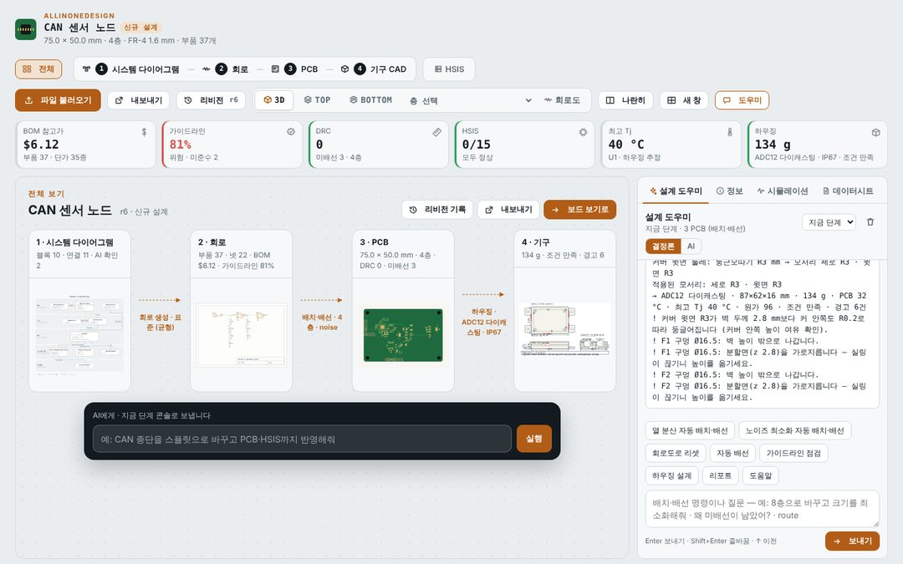
| 타일 | 값 | 누르면 |
|---|---|---|
| BOM 참고가 | 부품 참고 단가 합(추정), 이름 붙인 마지막 리비전 대비 증감 | 데이터시트 탭 |
| 가이드라인 | 회로·PCB 설계 가이드라인 점수, 미준수 수 | 도우미 guide check |
| DRC | DRC 문제 수, 미배선 수, 층 수 | PCB 편집 + DRC 목록 |
| HSIS | 정상 신호/전체, 오류 수 | HSIS |
| 최고 Tj | 열 해석이 있으면 그 값, 없으면 하우징 추정 | 시뮬레이션 · 열 |
| 하우징 | 무게 · 재질 · IP · 조건 만족 여부 | 4단계 |
전체 버튼은 네 단계를 한 화면에 모읍니다. 프레임마다 그 단계의 그림(다이어그램 · 회로도 · TOP · 조립도)과 요약 수치가 있고, 화살표에는 무엇이 그 다음을 만들었는지(회로 안, 층·전략, 재질·IP)가 적힙니다. 프레임을 누르면 그 단계로 가고, 아래 AI 바에 적으면 지금 단계 콘솔로 보냅니다.
시뮬레이션
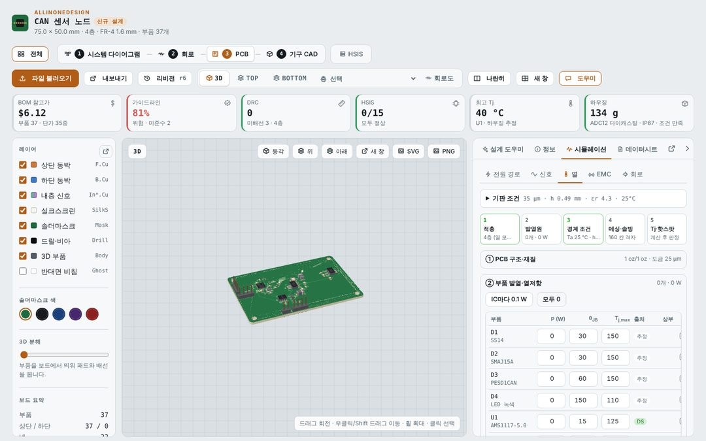
| 탭 | 내용 |
|---|---|
| 전원 경로(IR drop) | 공급 핀에서 부하 핀까지 동박을 따라 흐르는 전류로 전압 강하와 트랙 발열. 부하 전류는 IC 핀에 나눠 넣습니다. |
| 신호 | 트랙 길이·임피던스·반사·크로스토크 추정, 차동 쌍 점검. |
| 열 | 부품 손실 → 보드 온도 분포(격자 해석), 부품별 Tj, 하우징과의 연계. |
| EMC | 모터 제어기 파라미터(PWM·슬루·루프 면적)로 방사 추정과 대책. |
| 회로 | MNA 회로 해석과 MCU 펌웨어 코시뮬레이션(1 ms). 펌웨어 파라미터를 바꾸고 빌드 & 시뮬레이션을 누르면 3D에서 LED·모터가 움직입니다. |
2D 보기 위에 결과를 겹쳐 볼 수 있고(범례 표시), 결과는 설계 보고서에 들어갑니다.
HSIS (HW/SW 인터페이스 사양)
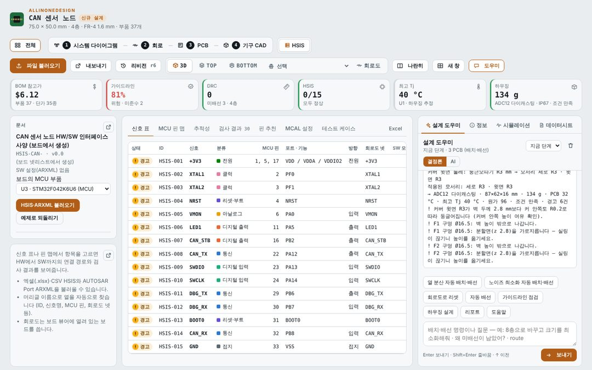
- 신호 표: 엑셀 HSIS(또는 보드에서 만든 초안)의 신호·분류·MCU 핀·포트·방향·넷. 상태(정상·경고·오류)와 필터.
- MCU 핀 맵: 패키지 핀 배치 위에 신호를 그립니다. 핀을 누르면 보드·회로도에서 강조.
- 추적성: 요구사항 ↔ HSIS ↔ 테스트 연결(SYS.4).
- 검사 결과: 회로도 넷·보드·펌웨어·ARXML과 대조한 오류·경고 목록.
- 핀 추천: MCU 핀 기능 DB로 역할(PWM·ADC·CAN·SPI …)에 맞는 핀을 추천(같은 주변장치 묶음, 헝가리안 매칭)하고 적용합니다.
- MCAL 설정 · 테스트 케이스(SWE.6/SYS.4) 생성과 내려받기.
탭 머리의 Excel은 지금 탭의 표를, 내보내기 창의 "HSIS 전체"는 모든 표를 시트별로 저장합니다.
기능 안전 — ASIL 등급별 설계
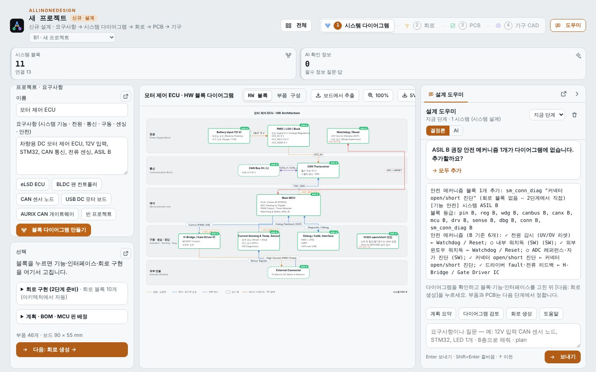
요구사항에 ASIL A~D(또는 SIL 1~3, QM)를 적으면 1단계가 그 등급으로 시작합니다. 질문 카드의 "환경·안전" 항목에서도 고를 수 있습니다.
- 등급과 안전 목표 —
safety level B --goal "의도치 않은 모터 구동 방지". 블록마다 다른 등급은safety block dbg QM또는 선택 패널의 ASIL 선택. 다이어그램에 블록 테두리 색·배지(A 파랑 · B 초록 · C 호박 · D 빨강)가 붙습니다. - 권장 안전 메커니즘 — 등급이 정해지면 빠진 메커니즘을 묻는 카드가 뜹니다.
safety로 상태를 보고safety apply all(또는uv wdt_ext drv_fb sbc cutoff2 sensor_red …)로 블록을 추가합니다. 전원 감시·외부 워치독은 회로 블록supervisor(TPS3823, nRESET + WDI), 이중 차단은hs_switch(하이사이드 P-FET + SAFE_EN)로 2단계에서 실제 부품이 됩니다.ASIL 권장 메커니즘 A 전원 감시(UV/OV 리셋) · 내부 워치독(SW) B + 외부 윈도우 워치독 · ADC 레퍼런스/자가 진단(SW) · 커넥터 open/short 진단 · 드라이버 fault·전류 리드백 C + SBC(질의응답 워치독·FS0B) · 독립 모니터 경로 · 리던던트 센서(이종) · 이중 차단 세이프 스테이트 D + ASIL 분해 2채널 · 락스텝/2-MCU 상호 감시 - HW와 SW 메커니즘을 함께 — 추가 카드는 "HW + SW 모두 / HW만 / SW만"을 고르게 합니다. SW 메커니즘(
safety sw)은 MCU 블록의 기능 줄에SW: …로 기록되고 다이어그램에는 "⚑ SW 안전 메커니즘 n개"로 보입니다: A 내부 워치독+프로그램 흐름 감시 · 기동 자가 진단(BIST) · 입력 범위/타당성 검사 → B + 메모리 보호·주기 테스트 · 클럭 감시 · ADC 자가 진단 · 통신 E2E · 출력 리드백·세이프 스테이트 절차 → C + 다중 소스 타당성 · HW 메커니즘 주기 테스트(잠재 고장) → D + SW 파티셔닝·FFI. HW 부품만으로는 등급이 안 나옵니다: 각 HW 메커니즘에는 그 부품이 진단 커버리지를 내기 위해 필요한 SW가 붙어 있습니다(예: 외부 워치독 → 창 안에서만 WDI 토글, 기동 시 리셋 테스트; 이중 차단 → SAFE_EN은 자가 진단 통과 후에만, 주기적 OFF 테스트).safety sw·상태·보고서가 이 목록을 보여 주고, FMEDA의 진단 커버리지도 SW 항목이 기록돼 있어야 올라갑니다. - FFI 경계 — 등급이 다른 블록 사이의 인터페이스는 다이어그램에
FFI ⚠로 표시되고safety ffi로 목록을 봅니다(낮은 쪽이 높은 쪽을 방해하지 못하도록 진단·격리). - 회로 점검 — 2·3단계 콘솔
safety check: 전원 감시 IC, 외부 워치독(MCU 연결), 질의응답 워치독, 역전압 보호, TVS, 드라이버 fault 리드백·EN 차단 경로(이산 FET면 게이트 풀다운), 전류 감지 션트, 이중 차단(하이사이드 스위치), 센서 리던던시, 커넥터 핀 분리(고전압 옆 안전 신호), 클럭 감시. 항목마다 최소 등급과 조치 명령이 붙고, AI 모드 "ASIL B로 올리려면 뭘 더해야 해?"는 이 결과를 근거로 답하고 실행합니다. - FMEDA 추정 —
safety fmeda: 부품 등급별 기본 FIT, 발견된 메커니즘 기준 진단 커버리지(DC)로 잔류 FIT·SPFM·LFM(추정)·PMHF를 계산해 ISO 26262-5 목표(B: SPFM ≥ 90 %, PMHF < 100 FIT …)와 비교합니다. 지표 띠 기능 안전 타일, 설계 보고서 "기능 안전" 절, 설계 데이터 Excel의 FMEDA·점검 시트, HSIS 표의 ASIL·안전 메커니즘 열에 반영됩니다.
등급 부품 — 자동 적용과 점검
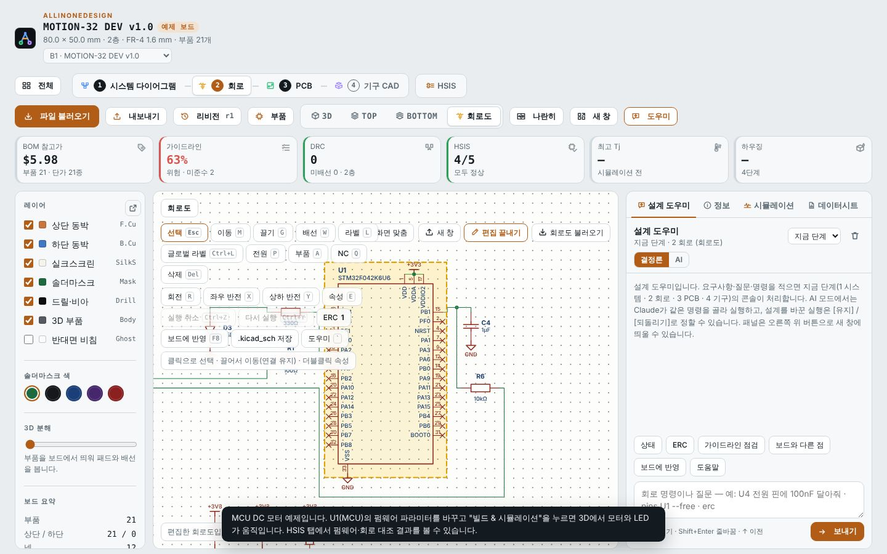
- 자동 적용 — 시스템 ASIL이 A 이상이면 2단계 회로 생성 때 라이브러리의 상용 부품이 핀 호환 차량용 부품으로 바뀝니다: AMS1117 → TLV1117LV-Q1, TPS3823 → TPS3823-Q1, TPS54331 → TPS54331-Q1, AO3400/AO3401 → NVTR4502N/DMP2035UQ(AEC-Q101), SS14 → NRVB140SF, SMAJ15A → SMAJ15A-Q, Samsung/Murata GRM 커패시터 → Murata GCM(AEC-Q200). 바뀐 부품은 설명에 "(ASIL B: Q100-1 대체)"가 붙고 데이터시트 탭에 등급 배지가 보입니다. MCU처럼 핀 호환 변형이 없는 부품(STM32F042)은 경고와 대안(S32K1xx · AURIX)을 안내하고, AURIX TC364(ASIL D)는 그대로 둡니다.
- 점검 —
safety parts: 안전 관련 부품마다 등급(AEC-Q100 Grade 0~3 · Q101 · Q200 · 산업용 · 상용 · 미상)과 ASIL 요구(Q100 Grade 1 / Q101 / Q200, -40~125 °C) 충족 여부, 차량용 대체품(핀 호환 여부)을 표로.safety parts --apply는 핀 호환 대체품을 한 번에 교체(회로도·보드·BOM·HSIS 반영)하고, 핀이 다른 부품은replace대화형 교체로 넘깁니다. 등급을 모르는 부품은 "미상"으로 남겨 승인 목록·Claude 추정·부품 API로 확인하게 합니다. - 부품 레코드의 자격 필드 — 승인 목록 CSV의
Grade(AEC-Q100 Grade 1 · Q200 …) ·Temp(-40~125) ·ASIL(ASIL-ready, SafeAssure) ·FIT(공급사 고장률) 열을 읽고, Claude 추정과 Mouser/Nexar 조회도 같은 필드를 채웁니다. 라이브러리 창과 교체 후보 카드에 등급 배지가 붙습니다. - FMEDA 연동 — 레코드에 FIT가 있으면 기본값 대신 그 값을 쓰고 표에 "FIT 출처(공급사/기본값)"와 등급 열이 들어갑니다. 지표 띠 기능 안전 타일에 "등급 미달 n"이 표시됩니다.
FIT·DC는 초기 설계용 가정값입니다. 실제 FMEDA·안전 분석은 부품 데이터시트의 FIT, 고장 모드 분포, 안전 개념 문서로 수행하세요. 차량용 대체품 목록은 내장 기본값이라 회사 승인 부품 목록으로 덮어쓰는 것을 권합니다.
회로 해석 — 질문에 숫자로 답하기
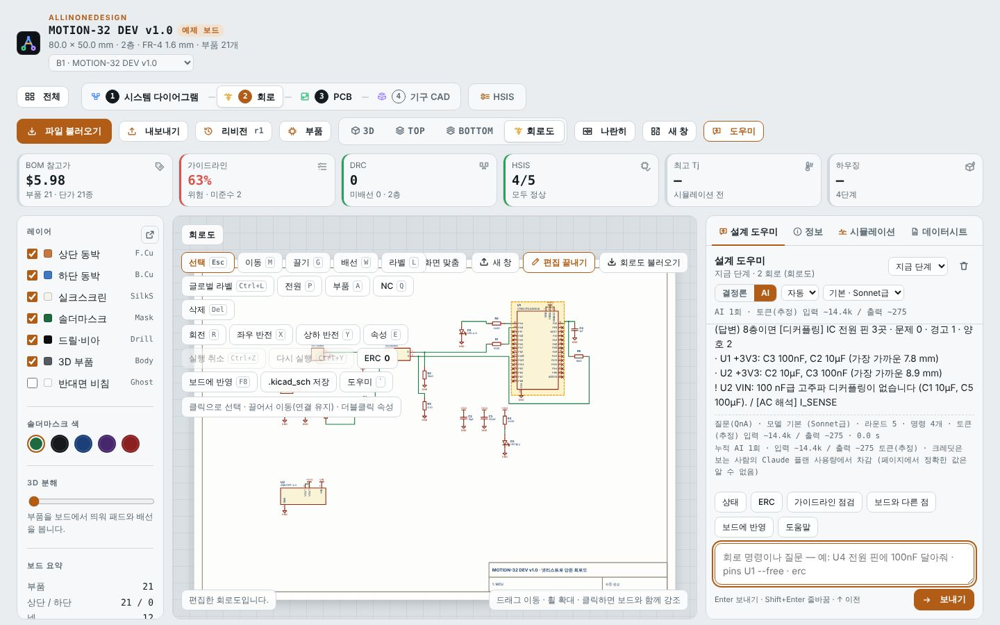
실행 방식은 기본이 AI입니다(도우미 위 토글 "AI · 결정론"). AI 모드에서는 모든 문장을 Claude가 먼저 해석해 명령으로 실행하고, Claude를 쓸 수 없을 때만 규칙 해석으로 대체합니다. 결정론은 Claude 없이 내장 규칙·알고리즘만 쓰고 싶을 때 고릅니다.
Claude 사용 허용
도우미 머리에 AI 사용 불가 · 규칙으로 해석이 보이면 이 페이지가 Claude에게 질문할 권한이 없는 상태입니다. 그 옆의 [Claude 허용] 버튼을 누르면 허용 대화상자가 뜨고(처음), 이전에 "허용 안 함"을 눌렀다면 권한 설정 창이 열립니다 — 거기서 Claude(질문, sample)를 켜면 바로 AI 대기로 바뀝니다. 버튼 없이도 첫 AI 요청 때 허용 대화상자가 뜹니다.
- claude.ai에 로그인한 상태로 아티팩트 페이지(claude.ai/artifact/…)에서 열어야 합니다. 내려받은
dist/index.html이나 다른 서버에 올린 사본에서는 Claude를 쓸 수 없고 항상 규칙으로 해석합니다. - 거부한 뒤에는 같은 페이지에서 다시 묻지 않습니다 — 아티팩트 메뉴(…) → 권한(Permissions)에서 켜거나, 새로고침 뒤 [Claude 허용]을 누르세요.
- 사용량은 보는 사람의 Claude 플랜 한도에서 차감됩니다. 한도에 걸리면 "사용량 한도" 메시지가 나오고 잠시 뒤 다시 시도합니다.
claude.ai 밖(로컬 파일 · 다른 서버)에서 AI 쓰기
claude.ai 아티팩트가 아닌 곳에서 열면 window.claude가 없어 플랜으로는 Claude를 부를 수 없습니다. 이때 [Claude 허용]을 누르면 로컬 AI 설정이 열리고, Anthropic Messages API를 직접 써서 같은 AI 모드(문장 해석·도구 호출·질문)가 동작합니다. 비용은 API 크레딧(console.anthropic.com)입니다.
- 브라우저에서 직접 — API 키를 입력하면 이 브라우저(localStorage)에 저장되고 페이지가 api.anthropic.com을 바로 부릅니다. 가장 간단하지만 키가 평문으로 남으니 개인 PC에서만 쓰세요.
- 프록시 서버 경유 — 소스 폴더에서
set ANTHROPIC_API_KEY=sk-ant-…(Windows) 또는export ANTHROPIC_API_KEY=…후npm run serve→http://localhost:8787에서 앱을 열고, 설정에서 "프록시 서버 경유"를 고릅니다. 키는 서버 프로세스에만 있습니다. (PORT=…로 포트 변경) - GitHub Copilot으로 — API 키 대신 GitHub Copilot 구독으로 쓰려면 소스 폴더에서
npm i(Copilot SDK 설치) 후npm run serve:copilot. 인증은gh auth login, 또는 Copilot CLI(npm i -g @github/copilot→copilot→/login), 또는COPILOT_GITHUB_TOKEN환경변수 중 하나. 설정에서 "프록시 서버 경유"를 고르면 머리 표시가 AI 대기 · GitHub Copilot이 됩니다. 모델은 Copilot 기본값이며COPILOT_MODEL=claude-sonnet-4.5처럼 바꿉니다(등급별 모델 이름은 무시). 콘솔 명령 실행(도구 호출)·질문 모드 모두 동일하게 동작하고, Copilot은 이 앱의 명령 외에 파일·셸을 건드리지 않도록 제한됩니다. 웹 검색은 Anthropic API 전용입니다. - 모델 이름 — 등급(빠름/기본/고급)별 모델 ID를 바꾸거나 고정 모델을 지정할 수 있습니다. [연결 확인]으로 키·모델을 바로 시험합니다.
- 상태 표시가 AI 대기 · 로컬 API이면 켜진 것입니다. [지우기]로 키를 삭제합니다.
- 웹 검색(기본 켬) — 부품 번호를 조회할 때 Claude가 제조사 데이터시트를 웹에서 찾아 핀 배열을 읽습니다(신뢰도·PDF 링크가 레코드에 남음). claude.ai 아티팩트 안의 Claude는 웹에 접근하지 못해 기억으로 추정하므로, 정확한 핀이 필요하면 로컬 모드 또는 부품 라이브러리에 CSV로 가져오세요.
회로·PCB 콘솔의 analyze는 설계를 바꾸지 않는 조회 명령입니다. 질문 모드의 Claude는 "이 회로 문제 없어?", "필터 컷오프 얼마야?", "3.3 V 레일 전압 강하는?" 같은 질문에 먼저 이 명령을 돌려 나온 숫자를 인용해 답합니다. 결정론 모드에서도 "전원 트리 해석해줘", "디커플링 분석"은 바로 analyze power·analyze decap으로 풀립니다.
| 명령 | 무엇을 계산하나 |
|---|---|
analyze power | 전원 트리: 접지 · 레일별 공급원(레귤레이터·커넥터) · 물린 IC · 추정 부하 · 디커플링 합 · 드롭아웃 부족 경고 |
analyze decap | IC 전원 핀마다 접지로 가는 커패시터(값·거리): 없음(!!) · 100 nF급 없음(!) · 12 mm 이상 떨어짐(!) |
analyze rc | 수동 소자 패턴: RC 저역 필터 fc·τ, LC·π(비드) 필터, 분압비·전압, 풀업/풀다운, 전류 감지 션트, LED 전류(Vf 가정) |
analyze ac --from 넷 --to 넷 | 수동 소자(R·L·C·비드)만으로 만든 소신호 AC 응답: DC 이득 · −3 dB 주파수 · 공진 피크 · 10배 간격 이득표(1 Hz–100 MHz). IC·레귤레이터는 열린 것으로, 다른 전원 레일은 AC 접지로 봅니다. |
analyze dc | MNA DC 동작점: 노드 전압, 소자 전류·소비(레귤레이터·LED·부하), 모델 제외 부품 |
analyze ir [--net 넷 --total mA] | 동박 IR drop(3단계 배선 기준): 최저 전압·최악 핀·동손·최대 전류·온도 상승 |
analyze si | 넷별 길이·지연·Z0·폭·비아, 차동 쌍 길이차·스큐·간격·Zdiff |
analyze thermal · analyze emc | 열 해석·EMC 점검 요약(PCB 콘솔의 report와 같음) |
analyze all | 위 항목을 한 번에(ac 제외) |
모든 값은 초기 설계용 추정입니다(부품 모델은 R·C·L·비드·다이오드·LED·N-MOSFET·레귤레이터·브리지 드라이버·모터 수준). SPICE 수준의 과도 해석·비선형 AC는 아니며, 정확한 값은 전문 시뮬레이터로 확인하세요.
회로 콘솔로 회로 보강 (테스트 포인트 · NC 핀 · 필터)
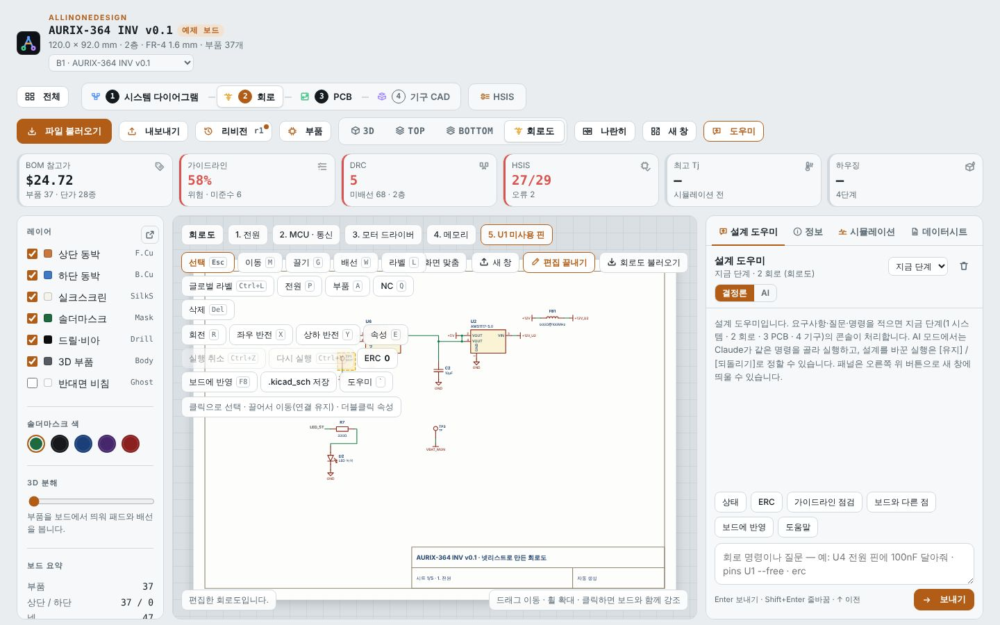
2단계 회로 콘솔(결정론·AI 모드)에서 아래 명령으로 회로를 보강합니다. AI 모드에서는 "HSIS 기준으로 전원·아날로그 신호에 테스트 포인트 전부 달아줘", "U1 안 쓰는 핀 10k로 GND에 묶어줘", "U2 입력에 페라이트 비드 넣고 양쪽에 100nF" 같은 문장을 Claude가 이 명령들로 바꿔 실행하고, 마지막에 apply·erc까지 돌립니다.
hsis [검색어] [--cat power,analog,comm,…] [--notp]— HSIS 신호 목록(분류 · MCU 핀 · 회로도 넷 · 테스트 포인트 유무). Claude가 대상을 고를 때 먼저 봅니다.tp [--cat …] [--port P02*] [--nets A,B] [--fp TP-1.5|TP-1.0|TP-TH]— HSIS 신호 넷마다 1핀 테스트 포인트TP1, TP2 …를 넷 라벨 옆에 추가(이미 TP가 있는 넷은 건너뜀).apply로 보드에 1.5 mm 테스트 패드가 올라가고, HSIS 표의 TP 열과 검사(전원·아날로그·통신 신호의 TP 유무)에 반영됩니다. TP는 BOM 참고가에서 제외.tie U1 --free [--net GND] [--val 10kΩ] [--type R|C] [--direct]— 넷이 없는 핀(NC 표시 포함)을 저항/커패시터로, 또는 직접 넷에 묶습니다.--pins 3,4,PA3로 핀을 지정할 수 있습니다.insert FB --at U2.3— 핀의 넷에 직렬 부품(페라이트 비드 · 퓨즈 · 직렬 저항 · 다이오드) 삽입. 핀 쪽에 새 넷(+12V_U2)이 생깁니다. π 필터는insert FB뒤에 양쪽 넷에add C.- 아무 부품이나 추가 — "CC2420 추가해줘", "회로에 TJA1051T 넣어줘" 또는
add part CC2420 --pins SI=SPI_MOSI,SO=SPI_MISO,SCLK=SPI_SCK,CSn=RF_CS. 승인 목록 → 내장 DB → 이전 추정에서 찾고, 없으면 Claude 추정·부품 API·파일 가져오기를 묻습니다. 핀 배열로 박스 심볼을 그리고 전원/접지 핀(VDD·AVDD·VBAT·GND …)은 레일에 자동 연결, 나머지는 열어 두고 미연결 핀 목록을 알려 줍니다 →connect U9.RESETn MCU_RF_RST로 잇고apply하면 패키지 이름으로 만든 풋프린트(QFN-48 7x7 등)로 보드에 올라갑니다. 2핀 수동 부품은 여전히add R/C/….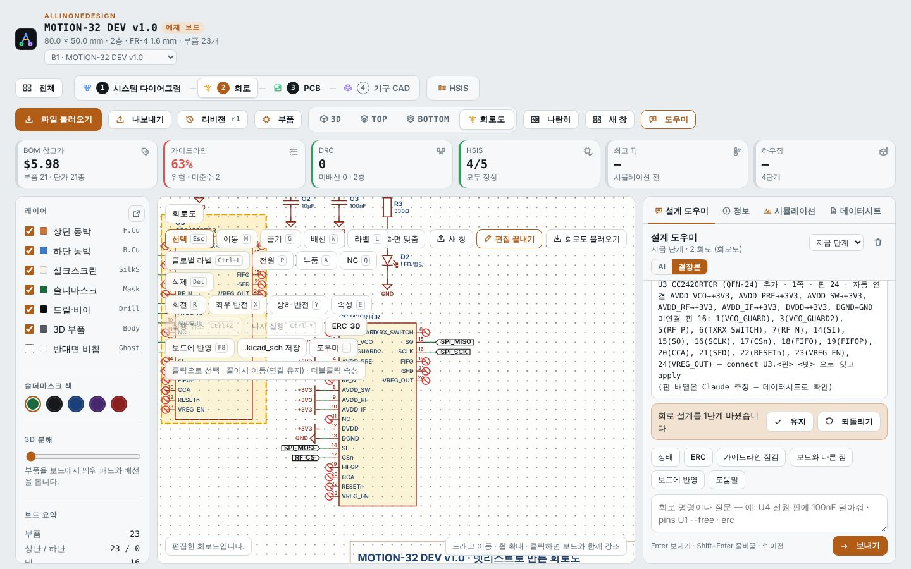
add part — 전원·접지 자동, 지정 핀 연결, 나머지는 열림 add의--pins에 부품 핀(U1.12,U1.PA3)을 쓸 수 있습니다. 연결된 핀이면 그 넷을, 빈 핀이면 핀 기능 이름의 새 넷을 만들어 핀과 새 부품을 함께 잇습니다. 추가할 수 있는 종류: R · C · CP · L · FB · D · LED · TVS · Z(제너) · F(퓨즈) · TP.
부품 교체 · 부품 라이브러리
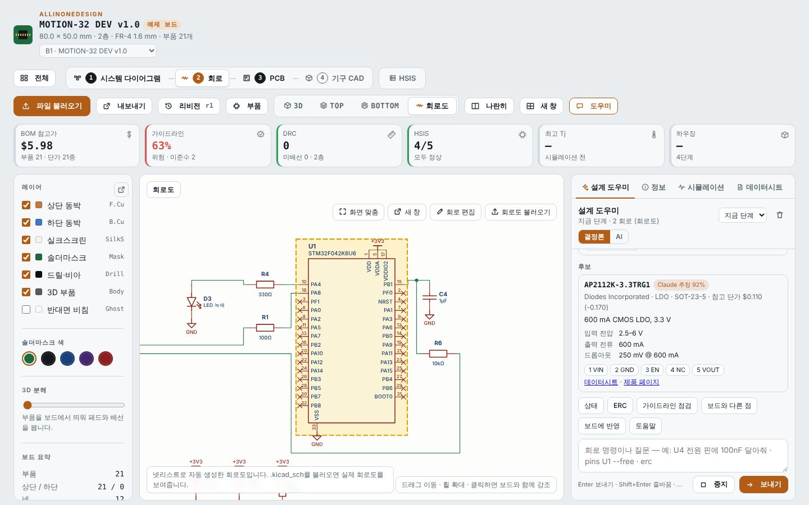
회로·PCB 단계의 설계 도우미에 "U2를 AP2112K-3.3으로 바꿔줘", "U3 대신 MCP1700 써줘", replace U2 AP2112K-3.3처럼 적으면 대화형 부품 교체가 시작됩니다(결정론·AI 모드 모두). 참조나 부품을 빼먹으면 되물어 봅니다.
- 찾기 — 승인 부품 목록 → 내장 DB → 이전에 추정·조회한 부품 순으로 찾습니다. 비슷한 부품이 여럿이면 고르게 합니다.
- 없으면 —
Claude 추정(사양·핀 배열·패키지·참고 단가를 AI가 채움, 카드에 "Claude 추정 n%" 배지) ·부품 API 조회(Mouser · Nexar/Octopart · 사내 부품 서버) ·승인 부품 목록 파일 가져오기중에서 고릅니다. 추정 결과는 데이터시트 링크로 확인한 뒤 "맞음 · 계속". - 핀 대응 — 기존 핀의 이름·역할(VIN/VOUT/GND/EN…)·번호로 새 부품 핀을 제안하고 표로 보여 줍니다. 짝이 없는 넷은 어느 핀으로 갈지, 새로 생긴 전원·EN 핀은 어느 넷에 묶을지 물어봅니다(EN은 보통 VIN).
- 적용 — 보드 부품(풋프린트·패드·넷 · 패키지가 바뀌면 같은 자리에 새 패턴 생성), 회로도 심볼(핀 배열이 다르면 새로 그림), BOM, 데이터시트 탭, HSIS의
U2.2같은 HW 연결이 한 번에 바뀌고 변경 요청 카드가 붙습니다. 되돌리기는 한 번에 전부 되돌립니다. 풋프린트가 바뀌면 PCB에서 래츠네스트·route로 다시 이어 주세요.
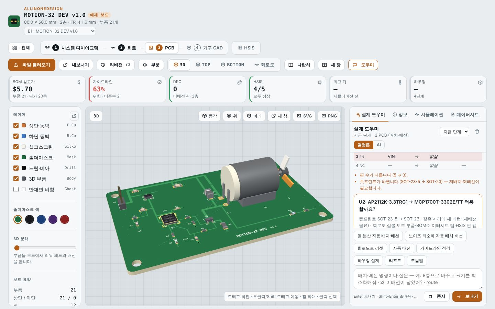
부품 라이브러리 창 (머리글 부품)
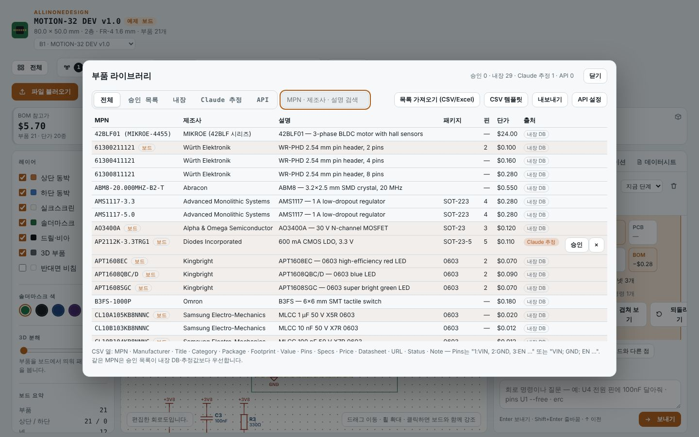
- 목록 가져오기 — 회사 승인 부품 목록 CSV/Excel. 머리글에
MPN(또는 Part Number · 부품번호)이 있으면 되고, Manufacturer · Package · Footprint · Value · Pins(1:VIN, 2:GND …또는VIN; GND; …) · Specs · Price · Datasheet · URL · Status(승인/우선/단종) · Note 열을 읽습니다. CSV 템플릿으로 서식을 받으세요. 같은 MPN은 승인 목록이 내장 DB·추정값보다 우선합니다. - 승인 버튼은 Claude 추정·API 결과를 승인 목록으로 올리고, 내보내기는 승인·추정·API 부품을 CSV로 저장합니다(Git에 함께 커밋).
- API 설정 — Mouser Search API 키, Nexar(Octopart) 토큰, 또는
GET {url}?q=MPN이 JSON을 돌려주는 사내 부품 서버. 키는 이 브라우저에만 저장됩니다. Mouser처럼 브라우저 직접 호출이 막힌(CORS) API는 사내 프록시 주소를 "사내 부품 서버"로 넣으세요. - 라이브러리는 이 브라우저(IndexedDB)에 남고, 데이터시트 탭에서 추정·API·승인 부품도 요약 페이지로 볼 수 있습니다.
Claude 추정 사양은 설계 초안용입니다. 핀 배열·정격은 반드시 실제 데이터시트로 확인하고, 확인한 부품은 승인 목록에 올려 두세요.
멀티보드 시스템 (보드 간 커넥터 연결)
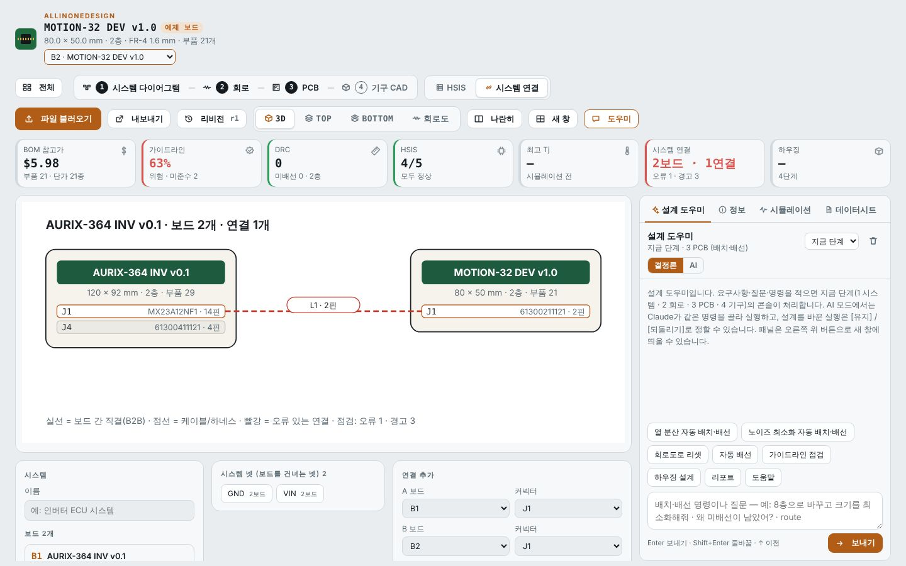
메인 보드 + 센서 보드, 전원 보드 + 제어 보드처럼 보드가 둘 이상인 제품은 한 시스템으로 묶어 설계합니다. 머리글의 보드 이름 아래 보드 선택 상자가 시스템의 보드 목록입니다.
- 보드 추가 — 보드 선택 상자에서
파일에서…(KiCad · Gerber · JSON),신규 설계…(1단계부터 새로 설계),예제: …를 고르면 지금 보드는 그대로 두고 새 보드B2, B3 …가 시스템에 들어옵니다. 상자에서 보드를 고르면 그 보드로 바뀌며, 보드마다 단계·회로·HSIS 상태가 따로 보관됩니다. 보드에는 역할(제어 · 구동 · 전원 · 표시 …)을 적어 둘 수 있습니다. - 시스템 연결 탭(보드가 둘 이상이면 나타남) — A 보드·커넥터, B 보드·커넥터, 종류(케이블/하네스 · 보드 간 직결 B2B), 핀 매핑을 고르고 연결 만들기. 커넥터는 각 보드의
J*·CN*·P*부품(또는 Connector 풋프린트)입니다. - 핀 매핑 —
핀 번호(1↔1)는 같은 번호끼리,넷 이름은 양쪽 넷 이름이 같은(또는 VCC/+5V·GND 같은 별칭인) 핀끼리,직접은 표의 드롭다운으로 핀마다 지정합니다. 연결마다 핀 표에 A 핀·넷 ↔ B 핀·넷이 보입니다. - 점검 — 핀 수 불일치, 짝 없는 핀, 접지↔신호/전원, 전원 레일 전압 불일치(+5V ↔ +3V3), 전원↔신호, 차동 쌍이 짝으로 가지 않음, 연결이 정해지지 않은 커넥터를 오류/경고/정보로 알려 줍니다. 지표 띠의 시스템 연결 타일에 보드·연결 수와 오류·경고가 보입니다.
- 보드 연결도(SVG · PNG), 시스템 넷(연결을 통해 보드를 건너는 넷의 합집합: GND, +5V, CAN_H …), 시스템 BOM(여러 보드의 부품을 합치고 보드별 수량 표시)을 보고 Excel로 내보냅니다. 설계 보고서의 시스템 보드 연결 항목과 설계 데이터 Excel에도 들어갑니다.
보드 연결·역할은 리비전 스냅샷에 함께 저장되어 복원할 때 되살아납니다. 새 프로젝트를 첫 화면에서 열면(추가가 아니라) 시스템은 그 보드 하나로 다시 시작합니다.
리비전 기록 · 비교
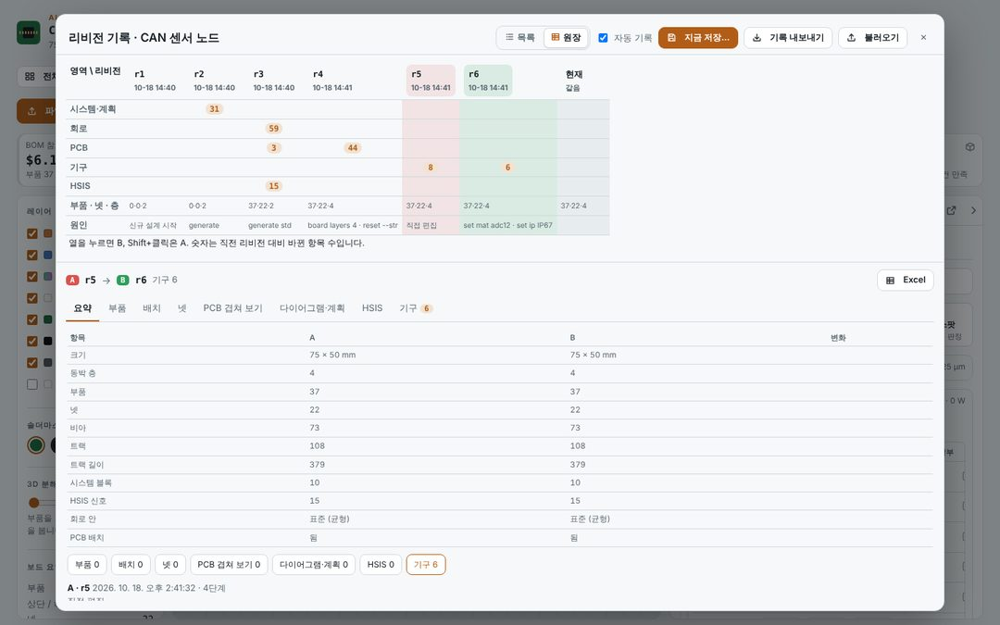
- 설계를 바꾸면 2–4초 뒤 자동으로 리비전
r1, r2 …가 기록됩니다(원인 = 그 사이 실행한 명령, 단계, 변경 요약). 바뀐 게 없으면 기록하지 않습니다. - 지금 저장…으로 이름(A01, EVT1), 단계(Proto · EVT · DVT · PVT · MP), 메모를 붙입니다. 이름 붙인 리비전은 정리되지 않습니다(자동 리비전은 프로젝트당 최근 150개).
- 비교: 목록에서 A·B를 고르거나(현재 포함) 원장의 열을 누릅니다(클릭 = B, Shift+클릭 = A). 탭: 요약 · 부품 · 배치 · 넷 · PCB 겹쳐 보기(같음 회색 / A에만 빨강 / B에만 초록, 층 선택) · 다이어그램·계획 · HSIS · 기구. Excel로 저장.
- 복원: 지금 상태를 먼저 기록한 뒤 그 리비전으로 되돌립니다.
- 기록은 이 브라우저(IndexedDB)에 프로젝트별로 남습니다. 기록 내보내기로 JSON 한 파일을 받아 설계 파일과 함께 Git에 커밋하고, 다른 PC에서 불러오기로 이어 봅니다.
내보내기 · 보고서
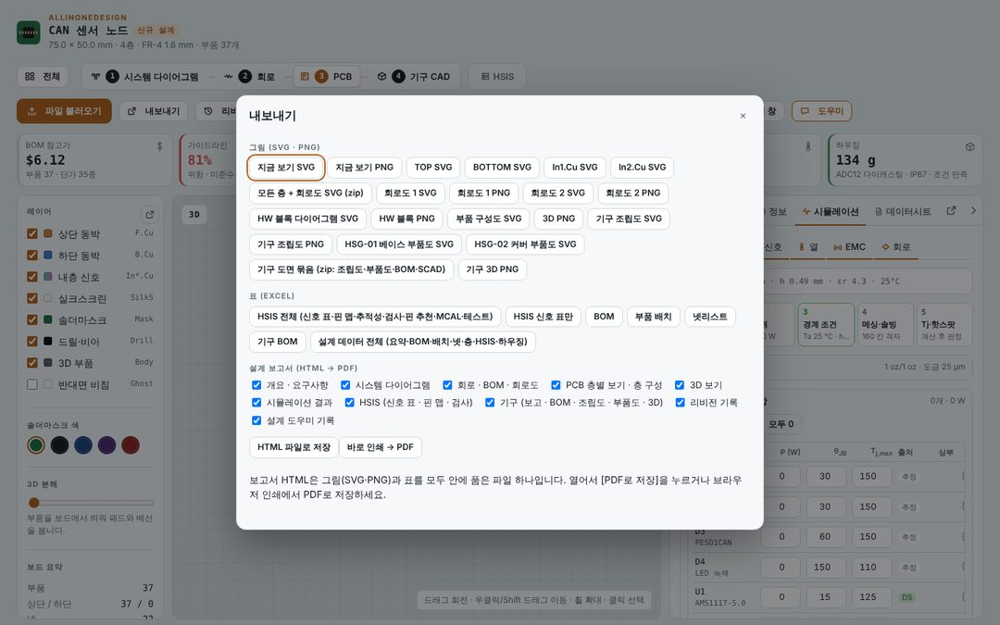
| 종류 | 항목 |
|---|---|
| 그림 (SVG · PNG) | 지금 보기, TOP · 내층 · BOTTOM(화면과 같은 벡터 SVG), 회로도 시트, HW 블록 다이어그램, 부품 구성도, 3D, 기구 조립도·부품도(HSG-01 베이스 · HSG-02 커버), 모든 층 + 회로도 zip |
| 표 (Excel) | HSIS 전체(신호 표 · 핀 맵 · 추적성 · 검사 · 핀 추천 · MCAL · 테스트), BOM, 부품 배치, 넷리스트, 기구 BOM, 설계 데이터 전체(요약 · BOM · 배치 · 넷 · 층 · HSIS · 하우징 · 리비전) |
| 설계 보고서 | 항목(개요 · 시스템 다이어그램 · 회로/BOM/회로도 · PCB 층별 · 3D · 시뮬레이션 · HSIS · 기구 보고/BOM/조립도/부품도/3D · 리비전 · 도우미 기록)을 골라 HTML 파일 하나로 저장하거나 바로 인쇄 → PDF |
| 설계 파일 | KiCad PCB · 회로도 저장, OpenSCAD · STL, HSIS CSV, MCAL 설정, 리비전 기록 JSON |
단축키
| 키 | 동작 |
|---|---|
| 1 2 3 4 | 3D · TOP · BOTTOM · 회로도 |
| [ ] | 동박 층 위/아래 (4층 이상) |
| Esc | 선택 해제 · 창 닫기 |
| ` | 설계 도우미 입력창으로 |
| X V Del R F | PCB 편집: 배선 · 비아 · 삭제 · 회전 · 뒤집기 (방향키 0.5 mm, Shift ×10) |
| Ctrl+Z / Ctrl+Y | 실행 취소 / 다시 실행 |
| Shift/Ctrl+클릭 | 기구 요소 다중 선택 · 원장에서 A 지정 |
명령어 요약
각 콘솔에서 help를 치면 전체 목록이 나옵니다. 자주 쓰는 것만 모았습니다.
| 단계 | 명령 |
|---|---|
| 1 시스템 | arch <문장> · block <그룹> "<이름>" --feat "…" · link A B "라벨" --kind power|signal|bus · rename · del · impl · variants [pick cost|std|ext] · generate [cost|std|ext] |
| 2 회로도 | add <부품> · move · wire · net · erc · guide check · pins U1 --free |
| 3 PCB | board 100 60 | auto | min · board layers 4 · strategy noise · reset · auto · route · pinswap · drc · housing [check|compare] |
| 4 기구 | set wall|corner|stand|top|gap|split · fillet|chamfer top|bottom|vertical|all <mm|off> · hole <면> --d · gland <면> M16 · vent · slot · tabs 4 --screw M5 · boss · rib · fins · label "…" · edit F1 --d 12 --z 6 · del F1 · open|close · export zip|scad|stl |
자주 묻는 질문
3D가 안 보입니다. Three.js를 CDN에서 불러오지 못한 경우입니다. 인터넷 연결을 확인하거나 TOP·BOTTOM 보기를 쓰세요.
AI 모드가 "규칙으로 해석"으로 바뀝니다. Claude를 쓸 수 없는 환경(허용되지 않은 호스팅)에서는 결정론 규칙으로 대신 실행합니다. 기능은 같고 해석 폭이 좁습니다.
리비전이 다른 PC에서 안 보입니다. 기록은 브라우저 안에 저장됩니다. 기록 내보내기로 JSON을 받아 Git에 두고, 다른 곳에서 불러오기하세요.
단가가 실제와 다릅니다. 참고 단가는 데이터시트 페이지의 data-price(약 1k 수량, 추정) 또는 분류별 기본값입니다. datasheets/db/의 페이지를 채우면 정확해집니다.
하우징 벤트가 "부품 높이를 벗어남"으로 표시됩니다. 자동 벤트가 얇은 베이스에 다 들어가지 않는 경우입니다. edit F# --z <mm>로 커버 쪽으로 옮기세요.